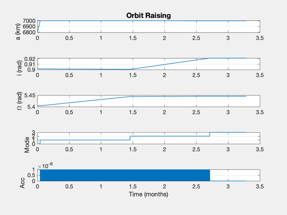
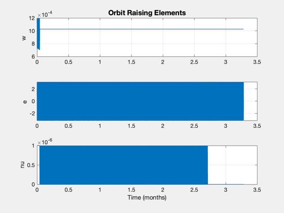

Contents
Simulate a low-thrust orbit raising from an ISS orbit
The strategy is to raise apogee, then correct for longitude of the ascending node then correct inclination. The width of the burn region is the allowable control band around the optimal true anomaly for each element change.
See also: ISSOrbit, El2RV, RHSOrbit, LowThrustControl, RK4, TimeLabl, Plot2D ------------------------------------------------------------------------
%-------------------------------------------------------------------------- % Copyright (c) 2020 Princeton Satellite Systems, Inc. % All rights reserved. % Since 2020.1 %--------------------------------------------------------------------------
Set up the simulation
el = ISSOrbit; elTarget = [7000 el(2)+0.03 el(3)+0.05 0 0 0]; a = 1e-6; % acceleration magnitude, km/s2 tEnd = 100*86400; % end time, sec dT = 50; % simulation timestep, sec % control parameters mode = 0; % initial mode - increase radius angWidth = 0.1; % Width of burn region tol = 0.01; % Tolerance on error % compute simulation parameters [r,v] = El2RV(el); x = [r;v]; n = ceil(tEnd/dT); d = RHSOrbit;
Simulate
xP = zeros(8,n); for k = 1:n [d.a,mode,el] = LowThrustControl( x, mode, elTarget, a, tol, angWidth ); xP(:,k) = [el(1:3)';mode;el(4:6)';Mag(d.a)]; x = RK4(@RHSOrbit,x,dT,0,d); end
Plot
[t,tL] = TimeLabl((0:n-1)*dT);
yL = {'a (km)' 'i (rad)' '\Omega (rad)' 'Mode' 'Acc' };
Plot2D(t,xP([1:4 8],:),tL,yL,'Orbit Raising');
Plot2D(t,xP(end-2:end,:),tL,{'w','e','nu'},'Orbit Raising Elements');
%--------------------------------------
% $Id: c23c4fba7d72e7d0af400ec1807a3593ba53882b $
 